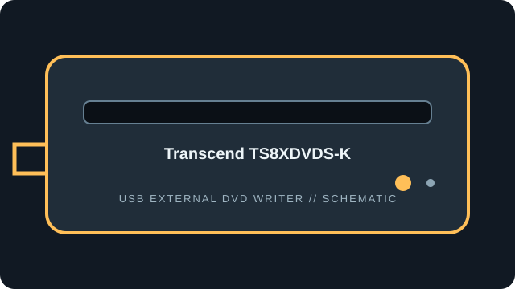

[ EXTERNAL DVD WRITERS // IDENTIFIED MODEL ]
Transcend TS8XDVDS-K
Transcend portable slim USB DVD writer. This TS8XDVDS-K record separates read capability from its rated write speeds and bundled software compatibility.

IDENTIFICATION: Match the full model/suffix and any bundled part number against the unit label and cited manual. Rated maximums depend on media, firmware, and operating mode; read support is not write support.
Documented specifications
| Catalog subcategory | External DVD writers |
|---|---|
| Exact model | Transcend TS8XDVDS-K |
| Read media formats | CD-ROM, CD-R/RW; DVD-ROM, DVD±R/RW, DVD±R DL and DVD-RAM. |
| Rated read speeds | DVD-ROM and DVD±R/RW up to 8×; DVD±R DL up to 6×; DVD-RAM up to 5×; CD-ROM/CD-R/RW up to 24×. |
| Write media formats | CD-R/RW; DVD±R, DVD±RW, DVD±R DL and DVD-RAM. |
| Rated write speeds | DVD±R up to 8×; DVD±RW up to 8×; DVD±R DL up to 6×; DVD-RAM up to 5×; CD-R/RW up to 24×. |
| USB interface | External slim USB 2.0, Mini-USB device connection; bus-powered. Use a direct host connection or the supplied auxiliary power arrangement if a host port is insufficient. |
| OS / firmware compatibility | Transcend lists Windows 7 or later and macOS 10.7 or later for the product/support family; bundled writing software may have narrower OS support. No TS8XDVDS-K firmware revision is given on the product specification page; do not use firmware for another TS8XDVDS SKU. |
| Model distinction | The black TS8XDVDS-K is a product colour/SKU designation; verify the rear label and regional package contents. |
Use, compatibility & preservation
- External slim USB 2.0, Mini-USB device connection; bus-powered. Use a direct host connection or the supplied auxiliary power arrangement if a host port is insufficient.
- Transcend lists Windows 7 or later and macOS 10.7 or later for the product/support family; bundled writing software may have narrower OS support. No TS8XDVDS-K firmware revision is given on the product specification page; do not use firmware for another TS8XDVDS SKU.
- The black TS8XDVDS-K is a product colour/SKU designation; verify the rear label and regional package contents.
- Record drive model and reported firmware, host OS, USB controller, application version, disc format, media brand and any read or verification errors when imaging.
- Keep checksummed image copies and logs; store discs in cases away from heat, moisture and direct sunlight. Avoid adhesive labels, abrasives and undocumented solvents.
Firmware support is model-specific: do not cross-flash a related product family or infer an update from an adjacent suffix.
Sources
- Transcend TS8XDVDS portable DVD writer — product specificationsManufacturer product page for the portable DVD writer family and its technical specifications.
- Transcend TS8XDVDS product supportManufacturer support and downloadable documents; match the unit label and package revision.